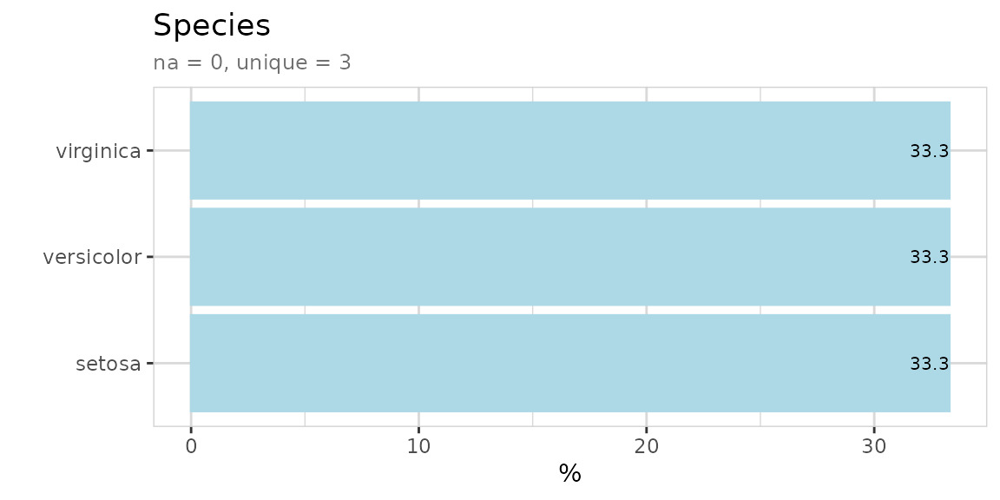
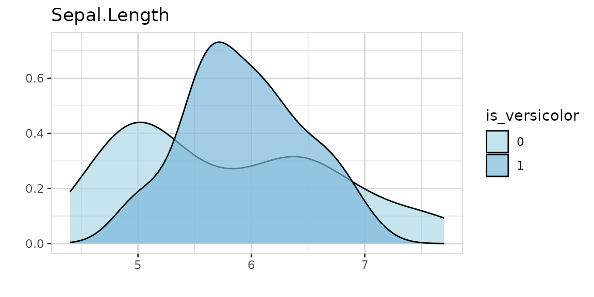
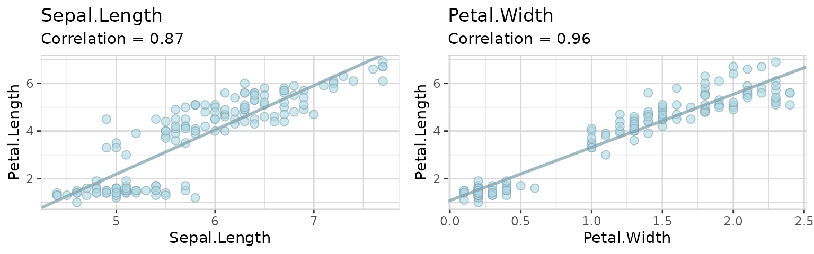
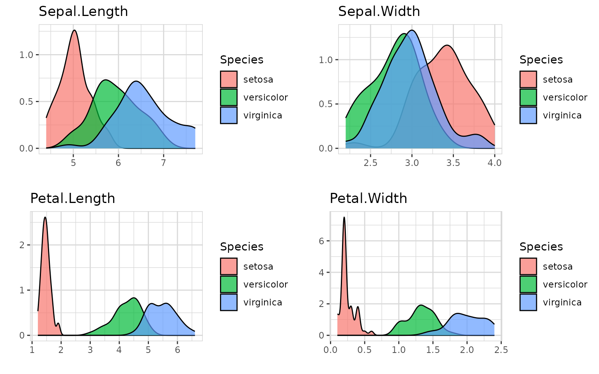
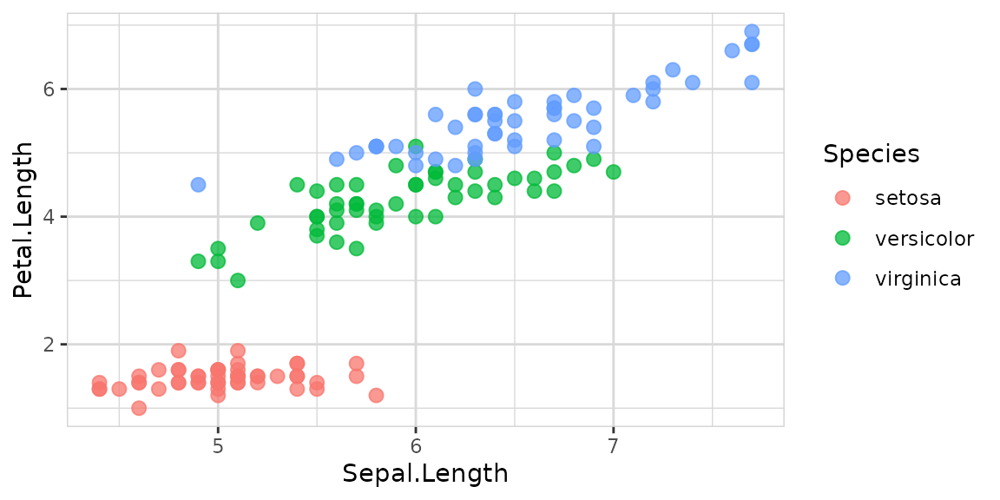
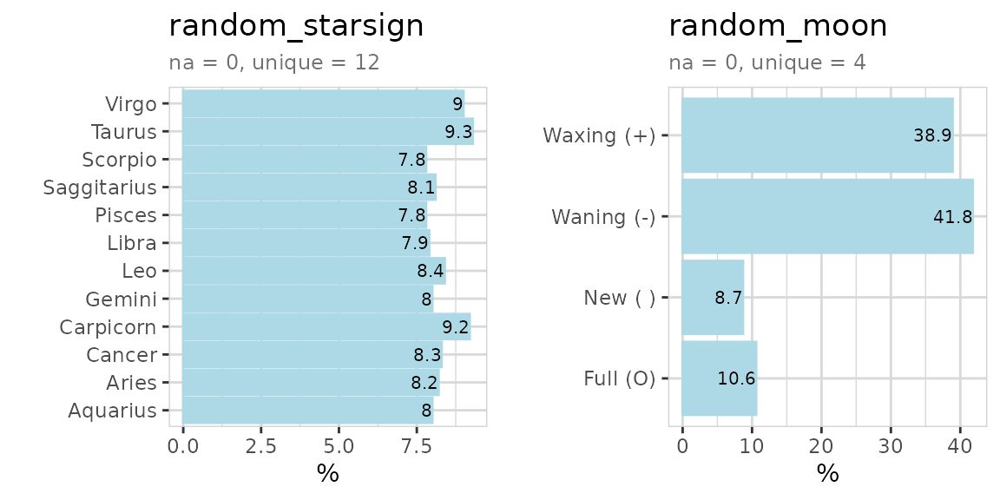

The explore package simplifies Exploratory Data Analysis (EDA). Get
faster insights with less code! There are three ways to use the package:
interactive data exploration, generate an
automated report or use low code for manual
exploration (explore(), describe(),
explain_*(), report() , abtest(),
…)
explore package on Github: https://github.com/rolkra/explore
As the explore-functions fits well into the tidyverse, we load the dplyr-package as well.
Interactive data exploration
Explore your data set (in this case the iris data set) in one line of code:
explore(iris)A shiny app is launched, you can inspect individual variable, explore their relation to a target (binary / categorical / numerical), grow a decision tree or create a fully automated report of all variables with a few “mouse clicks”.

You can choose each variable containing as a target, that is binary (0/1, FALSE/TRUE or “no”/“yes”), categorical or numeric.
Report variables
Create a rich HTML report of all variables with one line of code:

Or you can simply add a target and create the report. In this case we use a binary target, but a categorical or numerical target would work as well.
# report of all variables and their relationship with a binary target
iris$is_versicolor <- ifelse(iris$Species == "versicolor", 1, 0)
iris %>%
report(output_file = "report.html",
output_dir = tempdir(),
target = is_versicolor)If you use a binary target, the parameter split =
FALSE (or targetpct = TRUE) will give you a
different view on the data.

Grow a decision tree
Grow a decision tree with one line of code:
iris %>% explain_tree(target = Species)You can grow a decision tree with a binary target too.
iris$is_versicolor <- ifelse(iris$Species == "versicolor", 1, 0)
iris %>% select(-Species) %>% explain_tree(target = is_versicolor)
Or using a numerical target. The syntax stays the same.
iris %>% explain_tree(target = Sepal.Length)
You can control the growth of the tree using the parameters
maxdepth, minsplit and cp.
To create other types of models use explain_forest(),
explain_xgboost() and explain_logreg().
Explore dataset
Explore your table with one line of code to see which type of variables it contains.
iris %>% explore_tbl()
You can also use describe_tbl() if you just need the
main facts without visualization.
iris %>% describe_tbl()
#> 150 observations with 6 variables
#> 0 observations containing missings (NA)
#> 0 variables containing missings (NA)
#> 0 variables with no varianceExplore variables
Explore a variable with one line of code. You don’t have to care if a variable is numerical or categorical.


Explore variables with a target
Explore a variable and its relationship with a binary target with one line of code. You don’t have to care if a variable is numerical or categorical.

Using split = FALSE will change the plot to %target:
The target can have more than two levels:
Or the target can even be numeric:

Explore multiple variables
iris %>%
select(Sepal.Length, Sepal.Width) %>%
explore_all()
iris %>%
select(Sepal.Length, Sepal.Width, is_versicolor) %>%
explore_all(target = is_versicolor)
iris %>%
select(Sepal.Length, Sepal.Width, is_versicolor) %>%
explore_all(target = is_versicolor, split = FALSE)
iris %>%
select(Sepal.Length, Sepal.Width, Species) %>%
explore_all(target = Species)
iris %>%
select(Sepal.Length, Sepal.Width, Petal.Length) %>%
explore_all(target = Petal.Length)
data(iris)To use a high number of variables with explore_all() in
a RMarkdown-File, it is necessary to set a meaningful fig.width and
fig.height in the junk. The function total_fig_height()
helps to automatically set fig.height:
fig.height=total_fig_height(iris)
iris %>%
explore_all()
If you use a target:
fig.height=total_fig_height(iris, var_name_target = "Species")
iris %>% explore_all(target = Species)
You can control total_fig_height() by parameters ncols (number of columns of the plots) and size (height of 1 plot)
Explore correlation between two variables
Explore correlation between two variables with one line of code:
You can add a target too:

Explore options
If you use explore to explore a variable and want to set lower and
upper limits for values, you can use the min_val and
max_val parameters. All values below min_val will be set to
min_val. All values above max_val will be set to max_val.

explore uses auto-scale by default. To deactivate it use
the parameter auto_scale = FALSE

Describing data
Describe your data in one line of code:
iris %>% describe()
#> # A tibble: 5 × 8
#> variable type na na_pct unique min mean max
#> <chr> <chr> <int> <dbl> <int> <dbl> <dbl> <dbl>
#> 1 Sepal.Length dbl 0 0 35 4.3 5.84 7.9
#> 2 Sepal.Width dbl 0 0 23 2 3.06 4.4
#> 3 Petal.Length dbl 0 0 43 1 3.76 6.9
#> 4 Petal.Width dbl 0 0 22 0.1 1.2 2.5
#> 5 Species fct 0 0 3 NA NA NAThe result is a data-frame, where each row is a variable of your
data. You can use filter from dplyr for quick checks:
# show all variables that contain less than 5 unique values
iris %>% describe() %>% filter(unique < 5)
#> # A tibble: 1 × 8
#> variable type na na_pct unique min mean max
#> <chr> <chr> <int> <dbl> <int> <dbl> <dbl> <dbl>
#> 1 Species fct 0 0 3 NA NA NA
# show all variables contain NA values
iris %>% describe() %>% filter(na > 0)
#> # A tibble: 0 × 8
#> # ℹ 8 variables: variable <chr>, type <chr>, na <int>, na_pct <dbl>,
#> # unique <int>, min <dbl>, mean <dbl>, max <dbl>You can use describe for describing variables too. You
don’t need to care if a variale is numerical or categorical. The output
is a text.
Use data
Use one of the prepared datasets to explore:
use_data_beer()use_data_diamonds()use_data_iris()use_data_mpg()use_data_mtcars()use_data_penguins()use_data_starwars()use_data_titanic()
use_data_beer() %>% describe()
#> # A tibble: 11 × 8
#> variable type na na_pct unique min mean max
#> <chr> <chr> <int> <dbl> <int> <dbl> <dbl> <dbl>
#> 1 name chr 0 0 161 NA NA NA
#> 2 brand chr 0 0 29 NA NA NA
#> 3 country chr 0 0 3 NA NA NA
#> 4 year dbl 0 0 1 2023 2023 2023
#> 5 type chr 0 0 3 NA NA NA
#> 6 color_dark dbl 0 0 2 0 0.09 1
#> 7 alcohol_vol_pct dbl 2 1.2 35 0 4.32 8.4
#> 8 original_wort dbl 5 3.1 54 5.1 11.3 18.3
#> 9 energy_kcal_100ml dbl 11 6.8 34 20 39.9 62
#> 10 carb_g_100ml dbl 16 9.9 44 1.5 3.53 6.7
#> 11 sugar_g_100ml dbl 16 9.9 26 0 0.72 4.6Create data
Use one of the prepared datasets to explore:
create_data_abtest()create_data_app()create_data_buy()create_data_churn()create_data_esoteric()create_data_newsletter()create_data_person()create_data_unfair()create_data_random()
# create dataset and describe it
data <- create_data_app(obs = 100)
describe(data)
#> # A tibble: 7 × 8
#> variable type na na_pct unique min mean max
#> <chr> <chr> <int> <dbl> <int> <dbl> <dbl> <dbl>
#> 1 os chr 0 0 3 NA NA NA
#> 2 free int 0 0 2 0 0.62 1
#> 3 downloads int 0 0 99 255 6704. 18386
#> 4 rating dbl 0 0 5 1 3.44 5
#> 5 type chr 0 0 10 NA NA NA
#> 6 updates dbl 0 0 72 1 45.6 99
#> 7 screen_sizes dbl 0 0 5 1 2.61 5
# create dataset and describe it
data <- create_data_random(obs = 100, vars = 5)
describe(data)
#> # A tibble: 7 × 8
#> variable type na na_pct unique min mean max
#> <chr> <chr> <int> <dbl> <int> <dbl> <dbl> <dbl>
#> 1 id int 0 0 100 1 50.5 100
#> 2 target_ind int 0 0 2 0 0.53 1
#> 3 var_1 int 0 0 61 1 51.4 99
#> 4 var_2 int 0 0 63 1 48.6 98
#> 5 var_3 int 0 0 62 1 49.2 100
#> 6 var_4 int 0 0 68 0 48.6 100
#> 7 var_5 int 0 0 64 2 51.9 99You can build you own random dataset by using
create_data_empty() and add_var_random_*()
functions:
# create dataset and describe it
data <- create_data_empty(obs = 1000) %>%
add_var_random_01("target") %>%
add_var_random_dbl("age", min_val = 18, max_val = 80) %>%
add_var_random_cat("gender",
cat = c("male", "female", "other"),
prob = c(0.4, 0.4, 0.2)) %>%
add_var_random_starsign() %>%
add_var_random_moon()
describe(data)
#> # A tibble: 5 × 8
#> variable type na na_pct unique min mean max
#> <chr> <chr> <int> <dbl> <int> <dbl> <dbl> <dbl>
#> 1 target int 0 0 2 0 0.51 1
#> 2 age dbl 0 0 1000 18.2 49.1 80.0
#> 3 gender chr 0 0 3 NA NA NA
#> 4 random_starsign chr 0 0 12 NA NA NA
#> 5 random_moon chr 0 0 4 NA NA NA
data %>% select(random_starsign, random_moon) %>% explore_all()
Basic data cleaning
To clean a variable you can use clean_var. With one line
of code you can rename a variable, replace NA-values and set a minimum
and maximum for the value.
iris %>%
clean_var(Sepal.Length,
min_val = 4.5,
max_val = 7.0,
na = 5.8,
name = "sepal_length") %>%
describe()
#> # A tibble: 5 × 8
#> variable type na na_pct unique min mean max
#> <chr> <chr> <int> <dbl> <int> <dbl> <dbl> <dbl>
#> 1 sepal_length dbl 0 0 26 4.5 5.81 7
#> 2 Sepal.Width dbl 0 0 23 2 3.06 4.4
#> 3 Petal.Length dbl 0 0 43 1 3.76 6.9
#> 4 Petal.Width dbl 0 0 22 0.1 1.2 2.5
#> 5 Species fct 0 0 3 NA NA NATo drop variables or observations you can use
drop_var_*() and drop_obs_*() functions.
use_data_penguins() %>%
describe_tbl()
#> 344 observations with 8 variables
#> 11 observations containing missings (NA)
#> 5 variables containing missings (NA)
#> 0 variables with no variance
use_data_penguins() %>%
drop_obs_with_na() %>%
describe_tbl()
#> 333 observations with 8 variables
#> 0 observations containing missings (NA)
#> 0 variables containing missings (NA)
#> 0 variables with no varianceCreate notebook
Create an RMarkdown template to explore your own data. Set output_dir (existing file may be overwritten)
create_notebook_explore(
output_dir = tempdir(),
output_file = "notebook-explore.Rmd")